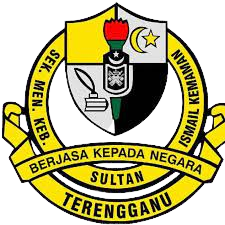

Home
Biodata
Education
Experience
Gallery
Contact Me
My
Education Background
Name :
Nurul Izzah
Age :
22 Years old
Programme :
Bachelor of Business Administration (Hons) Islamic Banking
Faculty :
Faculty of Business and Management
Student ID :
2020897736
Class :
D2BA2494A
Campus :
UiTM Kota Bharu
Now
Faculty of Business and Management,
Bachelor of Business Administration (Hons) Islamic Banking (BA249).
Universiti Teknologi Mara (UiTM) Campus Kota Bharu Cawangan Kelantan.
Grade CGPA Part 1 : 3.72/4.00
Grade CGPA Part 2 : 3.68/4.00
Grade CGPA Part 3 : 3.67/4.00
Areas of concentration:
Exco Akademik Dan Kerohanian In Islamic Banking Association Club (IBAC)
2019
Malaysian Higher School Certificate (STPM).
SMK Sultan Ismail, Kemaman Terengganu.
Grade CGPA Part 1 : 3.08/4.00
Grade CGPA Part 2 : 3.25/4.00
Grade CGPA Part 3 : 3.42/4.00
Band 3 achieved in MUET
Areas of concentration:
(1) Vice Treasurer of Majlis Perwakilan Pelajar (MPP)
(2) Vice Chairman of Pasukan Institusi Pertahanan Awam Malaysia (PISPA)
2017
Malaysian Certicate of Education (SPM).
SMK Geliga, Kemaman Terengganu.
Grade : 1A+ 2A 1B+ 1B 2C+ 2C
Areas of concentration:
(1) Chairman of Pasukan Beruniform Puteri Islam Malaysia (PPIM)
(2) Chairman of the Kelab Persatuan Pencegahan Dadah (PPDa)
(3) Chairman of Sukan dan Permainan Bola Baling
More
